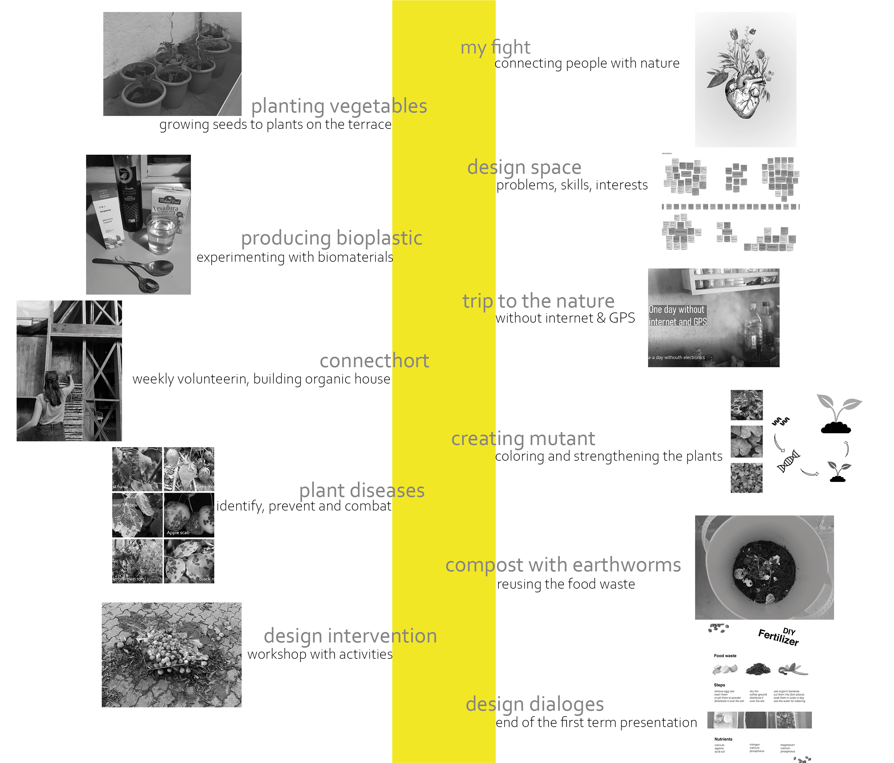
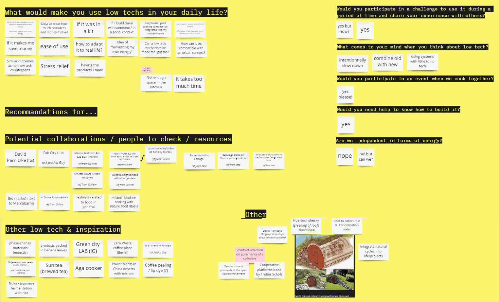

term 2
design studio
my journey so far
The first term comes with ups and downs. At the beginning of the master I tried to find out which topic interests me the most. I started with a blank sheet of paper, I started from 0, I didn’t had any specific areas of interest I wanted to focus on and was open to everything what was coming. Also I didn't have any expectations or thinking about projects and assignments. It was a journey through my personal development and my professional one. All the different tutors and topics helped me to think about what I want and which direction I would like to focus on. Also doing each week a reflection was super helpful to mirror the week´s input and output and let me know if I want to know more about a specific topic. I had three main learning of the first semester. One of them was idea generation, because of having new and challenging projects in different kind of topics. The second one is reflect and think about more what I like and want. And the third one is to not focus to much, explore more and try things out.
I would like to focus now on two different topics, one is agriculture and the other one is human behaviour. Both of this topics are interesting a lot. Among other reasons the agriculture/bio class helped to figured out that there a many different kind of issues in the agriculture field, for example you have a lot of trash, which is unused and get burned and also soil problems. There are many parts, which could be better, more efficient and sustainable. And also human behaviour is interesting me a lot. We live in our own bubble and forget in everyday life what is happening around us, which keeps us back from reality. We don‘t understand ourselves what we want, like and can do and also not the needs of our fellow men. We also forget the importance of nature and animals for our well-being and life on this planet. I have the feeling that through more holistic thinking and connection to na¬ture we can again better understand the connections and thus for more sustainability. I think that in our own bubble we often don‘t understand our own impact on this planet. Also for me its interesting to the digital dependence and the raising rate of people having mental issues like depressions, burnout and anxieties. We live in a fast paced society and don't have the time to give it much thought, so we'd rather move on to the next thing.
I thought about my role as a designer. When I first studied industrial product design I just thought about different kind of physical products, like kitchen tools, furniture or machines. And then I reflect that in this world full of different products you already have “enough”. Now I see my role as a designer different. Everything is connected with design, are these books, apps, furniture, labels, tools or pencils. I think design could be also a tool to bring people together, address them, also to communicate ideas or bring transparency to difficult topics, where for example also ui/ux design plays a big role. Design creates trust and let people get affected or are not interested in using/buying. With my skills on being a maker, empathetic and interested in psychology and my way of designing I want to be part of something and accompany or support good projects.
My goal for this master is to make a science master thesis about my topic. I don´t want to focus on doing a product, but first on a theoretical/conceptional thesis. My next steps would be to focus more on my topic, after I decided want I would like to do. I would like to try to think about solutions and first ideas. Also I would like to improve research and storytelling, because both things are not easy for me and I think both of them are important to communicate ideas and thoughts and make a relevant science paper. My objectives for that would be doing research with books and articles, get some inspiring conversations with experts and think about useful intervention regarding my topic.
ideas design intervention
Bubble thinking
People are getting egoistic, disconnected to nature, don’t understand the interrelationships and the importance of nature. My intervention idea: make art in nature, reflecting our relationships and to earth, recognizing and assigning tree species, nature meditation ( (drinking cacao), nature sounds, a journey through the forest, feel different materials (leaves, wind, water, branches), smell pine scent), talk about things you can do to get out of your bubble (try something new etc.)
Addiction to short term pleasures
People have a dopamine overflow, people having more mentall illnesses (like depressions and burnout) and need more to be happy. The intervention: talk about tools for a digital detox, talk about your life with social media, Show how much energy and water is consumed, Show how much it causes in your daily life and brain
Desertification
Monoculture makes the soil dead, its better to plant permaculture and learn how to regenerate and safe the good soil. Intervention about: planting things, what to buy, what which season, prevent and combat diseases/parasites, which soil and inform about the importance of soil and regeneration.
Living-self sufficient
Energy supply is mostly associated with high carbon dioxide emissions and drinking water, as well as the water for sanitation and kitchen needs a lot of energy to reach every individual person. This intervention: helping how to live more self sufficient, what positive effects it can have and how independent you are
my 3. design space
reflection class
This design studio we should make our new design space and think about our next design intervention, I presented the four topics on the top, which are including: Bubble thinking, addiction to short term pleasures, living self sufficient and desertification. My other classmates presented different topics like: Nikita: linguistic with emotions, languages and their different ways of interacting, Chris: through technologies communicate with products, Rei and Emilio: Compost, test with sensors, Marina: materials and waste, Busi: nfts and blockchain, Pippa: zero-waste lifestyle, what to do with their waste, Angel: sustainability, George: biomaterials, reuse old things, Anna what childrens want in their future, Vikrant: more communication with food, Ruben: duckweed, Aparna: low tech design, connect tech with products, Paula: intercomunities intercollarboration, working with the womans house, Didac: reuse, repair, Kai: new life for products, Audrey: rural futures/self-sufficient, Jeremy: self-sufficient community, Jose: food has a lot of patterns, trigger emotions by food, Joaquin: music changing physical relations, Borka: for future we need to think about our realities and Paula: connection with nature, less impact. So after the presentations I start talking to Audrey, because we had common topics and thought about relating them to each other. We started to make a miro board and collect our ideas.
second design intervention
First I thought about was is actually being self-sufficient and why we want to do that. ‘Self-sufficiency’ is the quality of feeling secure and content with oneself, a deep-rooted sense of inner completeness and stability.” It makes you more crisis proof, is more sustainable, gives you more independence, creates less waste or almost no extra waste and also you know what you eat and get. There are different ways to do life self-sufficient or autonomous. Own drinking water and energy supply, reuse resources like “waste”, grow your own food, exchange things with your neighbours, collect seeds from your food, reuse food waste for the compost, inform yourself about nutrients, preserve food and grow insects or algae’s, because they give you a big amount of nutrients, proteins and also are producing themselves fast.
So the next step we did was to contact the low tech lab in France, because I have the video of a French guy who was living on a boat being completely self-sufficient, which inspires me. He grows his own plants with a hydroponicsystem, eated spirulina and insects to get proteins and he works in this lab. After contacting them we got a friendly reply and they want to video call us. Then we start making a instagramm channel because we wanted to open source every thing and give people advises and explain about possible options. I thought about doing it day per day: Day 0 what means self-sufficient?, Day 1 food for the winter (Fermentating, Marmalade, Lauch, pesto), Day 2 building a agua ponic on my own, Day 3 Try building a community (Write low tech lab) , Day 4 take rainwater (Build a thing to take it), Day 5 talk to people (Ask adele for her project (balconnect), Jessica guy is building a aguaponic system, Rita from connecthort, Can masdeu, Was geben sie dir für tips, Katalog oft he objects I found to live self sufficient), Day 6: grow insects or spirulina, Day 7: compost (Use food waste), Day 8: Collect cabbage (glases, bottles for watering the palnts etc.), Day 9: get other food like (Spirulina, Duck weed, insects), Day 10 Documentation (How do I start this?, I am not an expert, Want to live more self succient in the city). My inspiration
my experiments
Preserving food: I started to preserve food, like fresh vegetables which need to be eaten fast. And normally in winter it’s too cold and not sunny enough to grow vegetables good, so it’s important to start preserve food for the winter, to have vegetables uánd nutrients for this time. So I took leek, tomatoes and cabbage and checked some recipes. With cabbage I knew a recipe from Russia which we always cooked, where you use salt to ferment the food. Also for the leek I added salt to ferment it and make it durable until you open the lid from the glass. For preserve other food its also common to use oils, sugar or heed. So the tomatoes I cooked a long time and added a normal amount of sugar and salt to make it durable and put it in the glass. I think the tomatoe paste is not long durable as the cabbage is, because the leek and the cabbage are fermented.
Also I looked for different communities or companies to cooperate with or get some tips, but it was hard to find one in Barcelona which fits to our topics. Also when we found some we didn´t get any respond back so we wrote to the low tech lab in France, and they were really open and want to arrange a videocall with us.


Hydroponic system: then I wanted to build a planter, but not a normal one with soil, but a specific planter called “hydroponicsystem”, where you grow plants without soil. The roots are hanging in the water. So I got the most of the materials from iaac and the rest I bought. I start cutting the wood in pieces than screwed some parts together and start stapling the plastic sheet on the wood. Then I took it home and build a holder for my hydroponic system and also a box where in the end the water comes inside. I added the moskito net and the planting balls into the plastic sheet gaps where the plants are coming inside. The whole thing is an specific angle because the water needs to flow the whole time from the top through the plants into the box and the with thw water pumo and a tube it gets to the top again. Everything worked quiet well, but now the next part would be to buy plants and observe how they are growing. For me this planter is really interesting because you have less soilproblems, less diseases and your vegetables can grow faster. I tried planting my plants in a normal pot but often they got sick and it took a long time.
topic change
During our process we thought about a lot was is actually living self sufficient and that it is hard to make this in the city and also being in this situation so we wanted to change the name and change a little bid the direction. We thought about being resilient, which means being an individual responding to problems and changings by adjusting our behaviours. Also connect this with the “Slow movement”, because at this team we tent to make everything fast and want more and more, which is also related to the topic being addicted to short term pleasures and have the bubble thinking. Its about fast fashion, fast food, fast tourism and so, which is first not good for the environment in different kind of aspects and also not good for the people and for yourself. You are living in your own bubble, don´t really understand what is happening surround you. Also I had this experience when I was working almost three years in a company, where I had similar tasks for 40 hours a week. After the work I was so tired and just wanted to move and make sports after sitting 8 hours at the computer or meet my friennds after being in my homeoffice having just telephone calls without camera. So I “didn´t” had time to for example red news, get to know my neighbors or forget about things. Living and taking things slow can connect your more again to food, your place/nature, life and people and also you. It could reduce short term pleasures and make you more conscious about things.
reflection 2. intervention
This class almost everybody presented their design interventions and also us. We got a good feedback and want to focus now more about on the topic “Slow movement” and our opensource “slow tech lab” community/instagramm account and our own projects (the cooker and the hydroponicsystem). Also we would like to build a cold food storage without electricity. In the next steps I also want to thing about if my projects can be applied to other contexts and also what I want to reach.
guiding question: responsibility
Did you develop your own experience within the network of actors in which and for which you are developing your project? To what extent and to which actors do you feel responsible?We contacted the low - tech lab in france to get some insights and tips. It would be nice to have collaborators and to learn from each other. Also we want to connect with the “low tech magazine” and ask the “Fab Lab” in Barcelona, if it is possible to create a physical space there to co-benefit from the workshops and skills.
Have you thought about expanding your community and from there your experience? Where do you see the boundaries of your experiential community?We could collaborate with more people involved in low-tech in Barcelona and abroad. We have contacted Low-tech lab to see if we could create a Barcelona local branch of the collective. We are starting to identify communities online that share tips on low tech fabrication. Low-tech magazine could also be an interesting contact as the author is based in Barcelona. For what we see on his website, he is sharing a lot of information about old techniques and sometimes suggests potential uses for nowadays, they could be design interventions. Beyond low techs, the slow movement also already exists and takes different forms: from slow food to slow fashion… Our project relates to it with a “maker” and “experimental” approach as the name Slow Lab might suggest but we could get closer to these Slow communities in general.
guiding question: reflexivity
What do I know and not know about my own project? What assumptions, interests, values underpin my project and to what extent have I reflected on them?We assume that people are willing to change their lifestyles and agree to take things slowly. It could be for different reasons: use less of planet resources, be more conscious of the time needed to grow, cook food in a world with few resources… The ambition of creating a “slow tech lab” also implies it will become some kind of community. We will need to check if people are willing to create together with others objects they use in their homes and then share the experience with others.
Am I committed enough to my project and to the community with (in) and for which I am co-developing it?We are starting at the scale of our homes so this alternative reality is already taking place. We decided to share our experience openly on our website and Instagram account. At the moment we are not connected to a local community in Barcelona, but we are open for new external input.
guiding question: responsiveness
In what sense am I corresponding to an interest, a need or an expectation of the sociotechnical system or community in which I feel involvedI have been eating a vegetarian diet for several years and have been steadily paying attention to a sustainable daily life. I invest in sustainable projects, use green energy, cook my own food, grow my own vegetables and buy only recycled products (second hand). I realize that through open communication we can inspire and learn from each other.
To what extent do I welcome and promote diversity and could adapt my project if new needs or demands arise? (How adaptable can my project be to possible changes?The slow lab is open to new ideas and thoughts and is easily adaptable. It should change the way of living in a good way. We are open to new ideas and have no specific guideline.
guiding question: anticipation
Could my project be domesticated in other contexts, by other actors? What could be the future consequences?
It should be an open source and easily accessible platform, so we hope to reach other people and spread our knowledge. Also, to collaborate with and help, maybe to create their own community.
What futures am I promoting, and who might benefit or be disadvantaged? How desirable are the futures I am promoting with my project and for whom?
We are promoting a resilient future (mentally and emotionally cope with problems, protecting self from the potential negative effects of stressors and prevent long term crises), while showing how to live with few resources and still enjoy it. Also, while including the concept of the “Slow movement”, which should help to rebuild a connection with oneself, one's fellow men and with the environment and fight against the increasing amount of people getting mental issues. We have more and more technological devices (like flushed toilets, bread baking machines etc.) which should helps us to have more time with things we like, but instead of we get even more stressed and busy and rushing towards the next task, which includes also our recreation. We also lost the connection to the natural world and rhythms around us, like the death. Slowing down your life includes moving back to basics, understanding specific processes and stepping out of the comfort zone. All individuals could benefit from it. Those who could be disadvantaged are brands or companies promoting the contrary: cheap and fast food, fashion, leisure, travels…
radicality
Can make up be an anti-surveillance tool? How can we be someone we are not in the daily life and we are afraid of? We could be someone else with face paint or masks or with the meta-verse. We consider normal as loops, which repeats every day. You sometimes can lose yourself being yourself while dealing with the daily life, work etc. How do people address the metabolic demands of their bodies? Its difficult to be radical, because you need to be brave, risky and stepping out of the comfort zone. Also for me radical means: trying something else, questioning, imagining, unexpected, curiosity, relearning and going back to the source/root.
iaac rooftop redesign
In our class we have common topics like low tech products and other devices for a biolab or to grow food or to make experiments. Also Audrey and me standing for the Slow Lab thought about being part of it. We all wanted to use the space of the rooftop from IAAC which contributes a lot of sun to experiment and collect data with our products. Also we want to create those products for the upcoming years to use them.
2nd design dialoges
Slow lab Discord Slow lab Website Slow lab Instagram


feedback design dialoges
Term 2